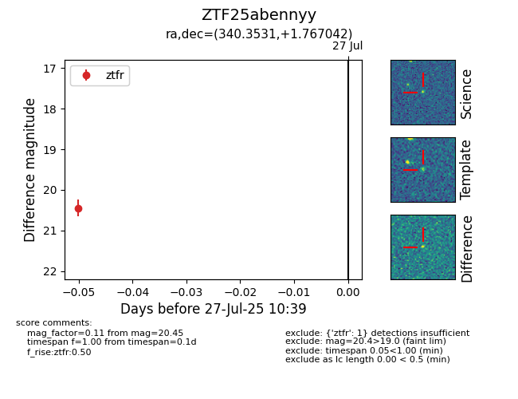

Target ZTF25abennyy at 2025-07-27 10:39, see:
FINK: fink-portal.org/ZTF25abennyy
Lasair: lasair-ztf.lsst.ac.uk/objects/ZTF25abennyy
ALeRCE: alerce.online/object/ZTF25abennyy
alt names
ZTF25abennyy (ztf,fink)
coordinates:
equatorial (ra, dec) = (340.3531,+1.76704)
galactic (l, b) = (70.4082,-47.40346)
photometry
last ztfr=20.45
1 ztfr detections
